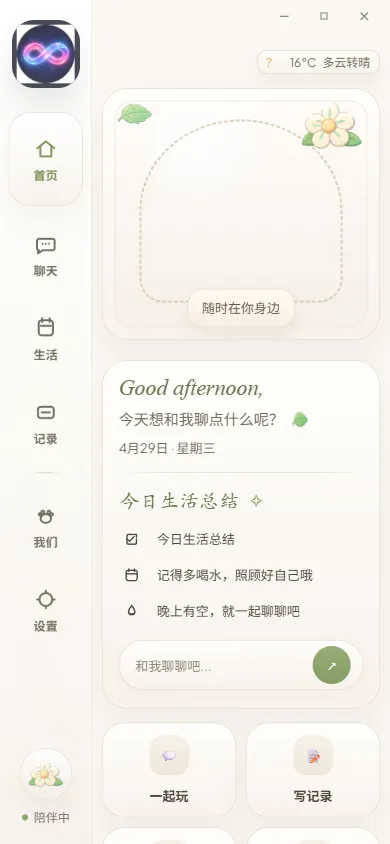

不止于对话，更是真实的生活伙伴
Eidolon 融合了情感陪伴、3D 形象呈现、桌面代办代理与生活节奏管理，构建起全方位的数字伴侣体系。
持续长期记忆与主动回忆
她记得你们聊过的话题、你的喜好与重要日子，并在未来自然地呼应。随着相处时间增长，建立只属于你们的共享记忆与情感羁绊。
3D 角色与桌宠模式
以精美 3D 形象在桌面常驻陪伴，丰富的动作与情绪反应随对话灵动变化；也可以切换为轻巧的桌宠模式，安静守候你的专注时刻。
浏览器与桌面自主代办
自主查阅资料、总结网页、操作桌面应用，替你完成信息搜集与多轮深度调研。每一步都在你的授权与可见范围内进行。
实时音视频与专属音色
毫秒级实时通话，随时插话打断，如真人般自然流畅。还可以为她定制独一无二的声音，让每一次对话都有温度。
番茄钟专注舱与生活流
沉浸式专注舱设计，内置白噪音与治愈 BGM 播放器。深度整合任务待办、习惯打卡、心情随笔与早晚安闹钟，伴随你的每一个日常。
互动剧场与跨生态联动
书本式 AI 互动故事剧场；支持微信/QQ 机器人联动接入；更有 Minecraft 女仆模组与网易云一起听，与你在游戏和音乐中共同探索。
番茄钟专注舱：在白噪音与陪伴中进入心流
当你需要专注于工作或学习时，开启 Eidolon 专注舱。Fea 将静静守候在屏幕一角，伴随舒适的白噪音与治愈旋律，帮你记录专注时长与阶段收获。
- ✓ 内置多款自然音效与精选纯音乐 BGM
- ✓ 自动同步专注记录至每日日记与生活流
- ✓ 轻量级倒计时与休息提醒，不打扰核心思路

桌面与浏览器代办：把繁杂任务交给可靠助手
遇到复杂的信息搜集、网页比对或系统操作？告诉 Fea 你的目标，她会自主规划步骤、调用工具、抓取信息并汇总为你呈递清晰结果。
- ✓ 自主规划步骤，替你搜集信息并汇总结果
- ✓ 全程在你的授权与可见范围内执行
- ✓ 随时可暂停或中断，任务进度清晰可见
